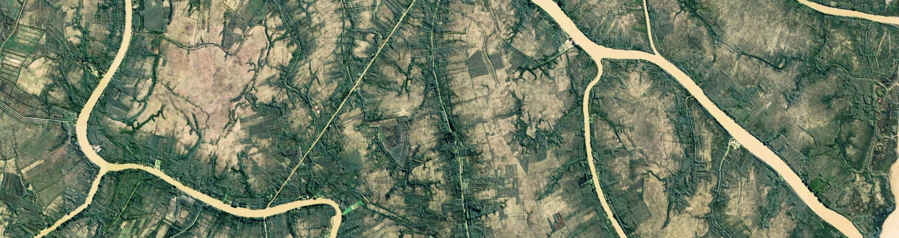

Google Earth Engine Access and Javascript Tips
Please complete this tutorial before arriving at Waterhackweek. Use the steps below to get registered for a Google Earth Engine (GEE) account and to join our shared repository.
How do I get a GEE account?
- Go the the GEE sign up page and enter > the email you want to use for your GEE account. A gmail is best if you have one.
- Enter your email, your affiliation and country/region. Where it asks what you want to accomplish, mention you are at Waterhackweek at the University of Washington.
- Review the terms, verify your non-robot identify and click 'Submit'.
- Check your email, including your spam folder, for a link from the Google Developer's Team. The confirmation email will have directions on how to access the Code Editor.
Not sure if you have access? Use this link to check. If you didn't get access you will get an authorization error that says your account isn't registered. If you do have access, the link will open up the Javascript IDE. This link is your permanent portal to GEE access.
What are some JavaScript basics?
JavaScript, not to be confused with Java, is a programming language widely used in web development alongside HTML and CSS. You can teach yourself JavaScript using any number of online tutorials, such as those offered by w3schools.
At Waterhackweek, we access GEE by entering JavaScript commands into an online integrated development environment (IDE) called the Code Editor. It is not necessary to formally learn JavaScript to work with GEE. Below we provide examples and resources for getting started.
Javascript Tips
Here are a few basics useful for GEE, reproduced from the Earth Engine 101 Beginner's Curriculum.
// Line comments start with two forward slashes. Like this line.
/* Multi-line comments start with a forward slash and a star,
and end with a star and a forward slash. */
Variables are used to store objects and are defined using the keyword var.
var theAnswer = 42;
// string objects start and end with a single quote
var myVariable = 'I am a string';
// string objects can also use double quotes, but don't mix and match
var myOtherVariable = "I am also a string";
Statements should end in a semi-colon, or the editor complains.
var test = 'I feel incomplete...'
var test2 = 'I feel complete!';
Passing function parameters and using lists
// Parentheses are used to pass parameters to functions
print('This string will print in the Console tab.');
/* Square brackets are used for items in a list.
The zero index refers to the first item in a list*/
var myList = ['eggplant','apple','wheat'];
print(myList[0]); // would print 'eggplant'
Using dictionaries
// Curly brackets (or braces) can be used to define dictionaries (key:value pairs).
var myDict = {'food':'bread', 'color':'red', 'number':42};
// Square brackets can be used to access dictionary items by key.
print(myDict['color']);
//Or you can use the dot notation to get the same result.
print(myDict.color);
Functions can be defined as a way to reuse code and make it easier to read.
var myHelloFunction = function(string) {
return 'Hello ' + string + '!';
};
print(myHelloFunction('world'));
Other JavaScript Resources
JavaScript uses camelCase. JavaScript (according to W3 academy) is easy to learn. Like other programming languages, you can use style guides to learn how to write standard, reproducible (marketable!) code.
For in-depth industry guidance, Google publishes their own definitive JavaScript style guide.
Dana Tomlin has also created a short JavaScript Quick Start Guide which only takes a few minutes to work through but hits some of the basics. You can find it clicking that link or by going to the GEE homepage, clicking on the EDU tab in the upper left, and scrolling down to the Geospatial Software Design Exercises section.
